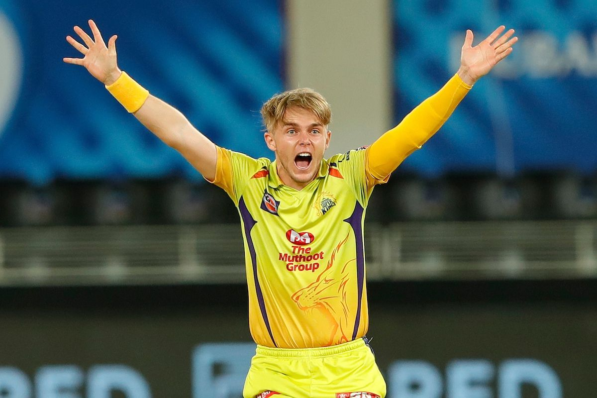

Chennai Super Kings have signed Dominic Drakes as a replacement for the injured England all-rounder Sam Curran for the remainder of the VIVO Indian Premier League (IPL) 2021. Drakes is an uncapped West Indian all-rounder who has featured in one First-Class, 25 List A and 19 T20 matches so far.

click here for more details